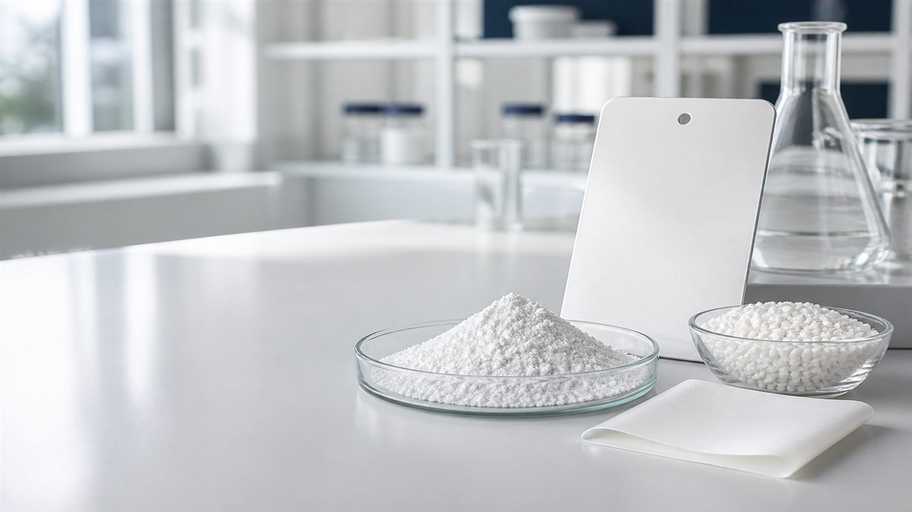
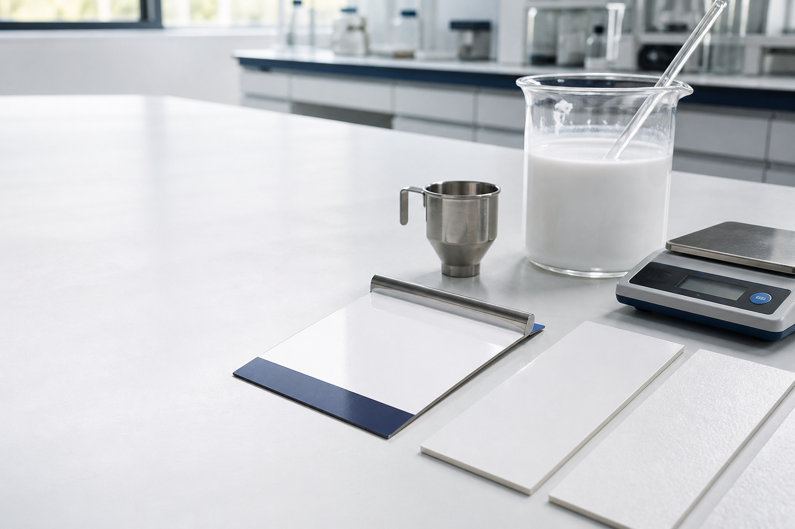

Coatings
Grades for architectural, industrial, automotive, marine, electrophoretic and other cited coating applications.
9 grades
TIOVAR Product Portfolio
Explore 25 TIOVAR titanium dioxide grades across eight product families for coatings, plastics, masterbatch, engineering plastics, printing inks, decorative paper and other industrial applications. Compare product positioning, application focus and technical characteristics to identify suitable grades for further evaluation.
Product Families
Each family brings together titanium dioxide grades for a defined application and processing environment. Compare product positioning and technical focus before reviewing individual grades.
Grades for architectural, industrial, automotive, marine, electrophoretic and other cited coating applications.
9 gradesGrades for polyolefin masterbatch, PVC, exterior plastics and polymer-film applications.
4 gradesGrades for polycarbonate, LCP, PC, PA, PBT, ABS and other engineering-plastics applications.
4 gradesGrades for decorative, laminated and other cited paper applications where whiteness, opacity, retention and dispersion matter.
3 gradesGrades for water- and solvent-based printing inks, including high-hiding and weather-resistant requirements.
2 gradesA grade for EVA and POE photovoltaic white films and plastics requiring high UV resistance.
1 gradeA high-purity grade for electronic ceramics, optical glass, batteries and other cited functional applications.
1 gradeA multipurpose grade for coatings, printing inks, engineering plastics and masterbatch.
1 gradeKnown Grade
Search a TIOVAR grade to open the corresponding product page.
Decision Path
Start with the end-use application, material system and processing requirements.
Compare application focus, surface treatment and the technical priorities that matter to your process.
Review the technical data, define trial conditions and confirm performance in the intended formulation.
Two Ways to Begin
Use Products to compare the TIOVAR portfolio or review a known grade. Use Applications when your starting point is a formulation, resin, process or finished-product requirement.
Explore application-specific selection factors, formulation priorities and relevant TIOVAR product starting points.
Technical Resources
Selection
See how pigment properties work together in an industrial formulation.
Treatment
Connect surface treatment with dispersion, processing and finished-product performance.
Validation
Plan a matched comparison using the formulation and test conditions that matter.
Technical Enquiry
Share your application, current grade, performance priorities and processing conditions so we can identify relevant TIOVAR grades for technical discussion.
Common Questions
Start with your end-use application, material system and processing requirements, then open the relevant family page to compare grades.
Enter the full grade name or model number in the Known Grade search to open its product page.
Each Product Detail page provides the available typical properties, product positioning and formulation priorities for that grade.
Use the technical enquiry and include the grade, application, process, target market and relevant performance requirements.
Product information is provided for technical evaluation and product-selection purposes. Typical values are not intended as guaranteed specifications unless explicitly stated in an agreed commercial specification or certificate of analysis.
Product Family · 9 Grades
Explore TIOVAR rutile titanium dioxide grades for architectural, industrial, automotive, marine, protective and water-based coatings. Compare application focus, surface treatment and key performance priorities to identify suitable grades for formulation trials.
Family Navigation
Filter the coatings portfolio by application, compare the candidate grades and open the relevant Product Detail pages before formulation trials.
Electrophoretic primers, industrial electrophoretic coatings and general interior coatings
Low ion content · Electrical resistivity · Whiteness · Gloss
General-purpose architectural, industrial and decorative coatings
Neutral tint · Hiding power · Whiteness · Durability
Multi-purpose architectural, industrial and decorative coatings
Neutral tint · Hiding power · Whiteness · Durability
Water-based interior and exterior wall emulsion paints
Relatively low viscosity · Bluish tone · Hiding power · Gloss · Durability
High-PVC interior and exterior matte or flat architectural coatings
Dry hiding power · Weather resistance · Water dispersibility · Oil absorption
Automotive OEM/refinishing, marine, aerospace and exterior coatings
Durability · Weather resistance · Gloss · Hiding power
Water-based automotive, water-soluble resin industrial and exterior coatings
Water dispersibility · Storage stability · Weather resistance · Chalk resistance
Automotive OEM/refinishing, marine, aerospace, exterior and industrial coatings
Ultra-high weather resistance · Chalk resistance · Color retention · Dispersibility
Automotive, wind-power, marine, heavy anti-corrosion, coil and powder coatings
Extremely high weather resistance · Chalk resistance · Color retention · Dispersibility
Grade Comparison
Compare the application focus, key formulation priorities and available surface-treatment or product-positioning information for all nine coatings grades. Full Typical Properties tables are provided on the Product Detail pages.
| Grade | Application Focus | Key Evaluation Priorities | Surface Treatment / Positioning |
|---|---|---|---|
| TP-C050 | Electrophoretic primers and coating systems; interior, industrial and powder coatings | Low ion content, electrical resistivity, whiteness, gloss, hiding power | Specially treated · Electrophoretic & General Coatings |
| TP-C100 | Interior and exterior flat and semi-gloss architectural; industrial and decorative coatings | Neutral tint, hiding power, whiteness, durability | General-purpose · Solvent and water-based systems |
| TP-C110 | Interior and exterior flat and semi-gloss architectural; industrial and decorative coatings | Neutral tint, hiding power, whiteness, durability | Multi-purpose · Solvent and water-based systems |
| TP-C120 | Water-based interior and exterior wall emulsion paints | Relatively low viscosity, bluish tone, high gloss, high hiding power, high durability | Zirconium-aluminum and special organic surface treatment · TIOVAR Premium positioning |
| TP-C200 | Interior and exterior high-PVC matte or flat architectural coatings, including systems above CPVC | Ultra-high dry hiding power, weather resistance, water dispersibility, oil absorption | Special surface treatment · High-PVC Architectural Coatings |
| TP-C300 | Automotive OEM/refinishing, marine, aerospace, exterior, architectural, coil and powder coatings | High durability, high gloss, high hiding power, weather resistance, dispersibility | Silicon-aluminum and special organic surface treatment · High-Durability Coatings |
| TP-C310 | Water-based automotive, water-soluble resin industrial and exterior coatings | Water dispersibility, storage stability, weather resistance, chalk resistance | Special surface treatment · Waterborne Coatings |
| TP-C400 | Automotive OEM/refinishing, marine, aerospace, exterior and industrial coatings | Ultra-high weather resistance, chalk resistance, color retention, gloss, hiding power | Special inorganic and organic surface treatment · Ultra-High Weatherability Coatings |
| TP-C410 | Automotive, wind-power, marine, aerospace, heavy anti-corrosion, coil and powder coatings | Extremely high weather resistance, chalk resistance, color retention, gloss, hiding power | Special inorganic and organic surface treatment · Extremely High Weather Resistance Coatings |
Selection Method
Binder chemistry, PVC, solids, dispersant, pigment loading, film build, cure and exposure conditions all influence the final pigment choice.
The Coatings Application page covers formulation problems, subapplication routes and selection factors in greater depth, while this page focuses on the TIOVAR coatings portfolio.
Validation Method
Binder, PVC, solids, dispersant package and substrate.
Dispersion, viscosity, storage stability and application behavior.
Opacity, color, gloss, appearance and application-specific controls.
Scrub, weathering, chalking, color retention or the required end-use test.
Technical Resources
High-PVC
Understand why formulation balance matters above CPVC.
Durability
Connect pigment selection with the complete exposure protocol.
Comparison
Compare candidate grades under matched formulation and test conditions.
Technical Enquiry
Share the binder, PVC, solids, dispersant, current pigment, application method, cure, exposure requirement and destination market to prepare a relevant trial discussion.
Common Questions
The TIOVAR coatings family includes grades for architectural, industrial, automotive, marine, protective, electrophoretic and water-based coatings.
Compare the application focus and key formulation priorities first, then review the Typical Properties on the relevant Product Detail pages.
No. Grade numbers identify products and do not represent a performance ranking.
Share the binder, PVC, solids, dispersant, current pigment, application method, target properties, exposure requirements and destination market.
Product information is provided for technical evaluation and product-selection purposes. Final suitability depends on formulation, processing, application and finished-product validation.

TIOVAR Premium Positioning · TP-C120
TP‑C120 is a chloride-process rutile titanium dioxide pigment with zirconium-aluminum and special organic surface treatment. It is listed for formulation evaluation in water-based interior and exterior wall emulsion paints. Its product profile includes relatively low viscosity, bluish tone, high gloss, high hiding power and high durability.
Product Snapshot
Reported Technical Data
These values reproduce the current TP‑C120 TDS for initial product review.
| Property | Reported value | Unit |
|---|---|---|
| TiO₂ content | 95 | % |
| Rutile content | 99.9 | % |
| Dry L* | 99.4 | |
| Dry b* | 1.00 | |
| Specific gravity | 4.1 | g/cm3 |
| pH | 7.5 | |
| Carbon black undertone (CBU) | 14.0 | |
| Oil absorption | 17 | g/100 g |
| Mean particle size | 0.27 | micrometres |
Fit Check
Formulation Priorities
Compare slurry and finished-paint viscosity in the intended formulation.
Measure wet and dry opacity at the target pigment loading and film thickness.
Compare dry L*, dry b*, CBU and visual color against the formulation target.
Measure gloss after the selected dispersion, application and cure procedure.
Check scrub, washability and exterior exposure where required.
Validation Method
Binder chemistry, PVC, solids, dispersant package, pigment loading and application method.
Compare viscosity across the agreed shear range and optimize dispersant demand first.
Wet and dry opacity, dry L*, dry b*, CBU and visual whiteness.
Grind quality, fineness, storage stability and application behavior.
Gloss, scrub, washability and film appearance after the selected cure.
Run exterior exposure or accelerated weathering where required.
Application Context
This Product page covers TP‑C120 positioning, technical data and trial priorities. The Water-Based Paint Application page covers the wider binder, PVC, dispersant, film-build and exposure decisions.
Review formulation-specific selection factors and relevant product starting points for water-based paint.
Enquiry Preparation
Share the formulation and trial conditions that matter most so the TP‑C120 discussion starts with the right technical context.
Binder chemistry and emulsion type
PVC range and solids target
Dispersant package and pigment loading
Viscosity target and shear range
Interior or exterior use
Destination market and expected quantity
Discuss packaging requirements and destination market during the enquiry. The current TP‑C120 TDS does not state pack format or net weight.
The TP‑C120 TDS is available on request through the product enquiry process.
Common Questions
TP‑C120 is a TIOVAR premium-positioned, chloride-process rutile titanium dioxide pigment for formulation evaluation in water-based interior and exterior wall emulsion paints.
The current TDS lists water-based interior and exterior wall emulsion paints.
The current TDS states zirconium-aluminum and special organic surface treatment.
Both water-based interior and exterior wall emulsion paints are listed for formulation evaluation. Final performance should be confirmed in the intended formulation.
Check viscosity, dispersant demand, grind quality, hiding, dry color, gloss, storage stability, scrub, washability and exterior durability where required.
Include TP‑C120, the binder, PVC range, viscosity target, application and destination market with the enquiry.
Related Products & Resources
Next Step
Request the technical document or share your binder, PVC and viscosity target to prepare the next formulation trial.
Product information is provided for technical evaluation and product-selection purposes. Reported values are not guaranteed specifications unless explicitly stated in an agreed commercial specification or certificate of analysis. Performance may vary with formulation, processing conditions and use requirements.